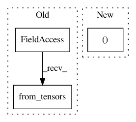

84d517d540204dcaa20237dc05bdd4a63a958923,reagent/training/td3_trainer.py,TD3Trainer,train,#TD3Trainer#Any#,102
Before Change
next_actor = (next_actor + noise.clamp(*self.noise_clip_range)).clamp(
*CONTINUOUS_TRAINING_ACTION_RANGE
)
next_state_actor = rlt.PreprocessedStateAction.from_tensors(
next_state, next_actor
)
next_q_value = self.q1_network_target(next_state_actor)
if self.q2_network is not None:
next_q_value = torch.min(
After Change
next_actor = (next_actor + noise.clamp(*self.noise_clip_range)).clamp(
*CONTINUOUS_TRAINING_ACTION_RANGE
)
next_state_actor = (next_state, rlt.FeatureData(next_actor))
next_q_value = self.q1_network_target(*next_state_actor)
if self.q2_network is not None:
next_q_value = torch.min(
In pattern: SUPERPATTERN
Frequency: 3
Non-data size: 3
Instances
Project Name: facebookresearch/Horizon
Commit Name: 84d517d540204dcaa20237dc05bdd4a63a958923
Time: 2020-05-07
Author: kittipat@fb.com
File Name: reagent/training/td3_trainer.py
Class Name: TD3Trainer
Method Name: train
Project Name: tensorflow/models
Commit Name: 2689c9aee73eed60661ca6868a479ce075d0d194
Time: 2018-07-20
Author: 36285763+yhliang2018@users.noreply.github.com
File Name: official/keras_application_models/dataset.py
Class Name:
Method Name: generate_synthetic_input_dataset
Project Name: facebookresearch/Horizon
Commit Name: 313b8fb78f17c527f34baad92f394394d2fb1ccf
Time: 2021-01-09
Author: czxttkl@fb.com
File Name: reagent/prediction/predictor_wrapper.py
Class Name: Seq2SlateWithPreprocessor
Method Name: forward